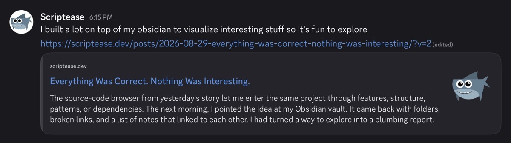

It's About the Little Things
This evening I asked Claude why my blog links show up in the chat app Discord as a bare link. I ended up with a perfect little card with my signature shark.
Just a link
When a friend drops a link into Discord, a little card unfolds under it: the site's name, the title, a line of text, a picture. When I dropped a link to my own blog, nothing unfolded. Just blue text.
The card is built from hidden labels on the page that tell chat apps what to display. The standard is called Open Graph. Other sites had them. My own site, the one I built in a single night in August, had none. Nobody had thought of it.
The labels want a title, a short description and a picture. The title was easy. The description was already written.
Every post here starts with a hook: one or two sentences whose only job is to make a stranger want to read on. My writing rules make each one pass the mom test: would someone outside tech read past it? That sentence has been sitting at the top of every post since the first one.
I didn't need to write anything new. I already had it. It just hadn't been thought about.
Now we're talking
Claude's first idea for the picture was the obvious one: take the first image of each post. I had it written and switched off.
My images are sparing. They're an accent, placed where the story needs them, not a cover. Put the first one on every card and I'd be choosing every post's image for how it looks in a chat, not for what it does in the story.
The second idea was one small picture for every card. The shark. It has sat next to the site's name since that first night. Now it comes along with every link.

You never rename things
On the internet, you never rename things. Change a page's address and every link already out there breaks.
One post still carried its working title in its address, "tackling complexity through visual lenses", though the post itself had become "Everything Was Correct. Nothing Was Interesting." When I published it a month ago, I thought I should fix that. I didn't. Now I wanted to share it, and the only link I had was the one I didn't want to share.
So while Claude was in there, I asked for the thing you never do.
Claude renamed it and left a signpost at the old address to send visitors to the new one. The new name also moved it ahead of the post it calls "yesterday's story": both had the same date, and the site put them in alphabetical order. Claude spotted it and asked. Giving the post its actual publication date put it back where it belonged.
I clicked the new link.
Well, that was unexpected
That's the headline of my 404 page, the page a website shows when an address leads nowhere. I had forgotten to publish the change.
Two weeks ago Claude handed me a link to a fresh post. I clicked before the site had finished updating and got a plain error page. So I asked whether I could have my own.
It looks like any other post: the headline, "Maybe I can interest you in one of these?", and the five latest posts. Then I kept adding. The sidebar's tag cloud shows the topics I file posts under, highlighting those of the current post. On this page, it highlights #404 in the smallest size. You can't click it: I didn't want a page of posts about missing pages. The footer, which on every page says "Notes from building with AI, one story at a time", adds: "Well, not this story. It wasn't found."
When it was done, I told Claude what I liked about it:
it has the right kind of details that don't oversell … if you keep looking you keep finding stuff but everything matches surroundings so nothing is over the top.
If you keep looking
The little radio-wave button at the top is RSS, a feed that lets a reader app collect new posts from all the sites you follow. In the old days everybody used Google Reader for that. I still use Feedly, and I had always wanted a feed for my blog. When I first clicked the button, the browser showed what a feed really is: a wall of raw code. I knew how to fix that. I had done it once before, by hand, with a stylesheet that dresses the code up as a page. Times have changed. This time I let Claude do all the work. Here's what the button shows now.
The magnifying glass came from a failed lookup. I wanted my post about OCR, software that reads text out of images, and had to go through a tag to find it. Now the glass opens into a search field inside its own button. When I saw it, I wrote back: "Awesome just like i imagined it".
Today, while the shark was going out, I noticed the month pages had no arrows at the bottom to the month before and after. Now they do.
None of it is required. Discord opens a bare link just fine. A feed reader never shows the page behind the button. Nobody has to land on a 404.
It's small details that make what I build fun.